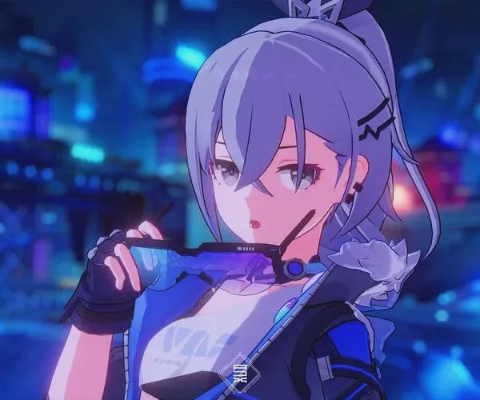

Honkai: Star Rail es un juego de rol en línea desarrollado por miHoYo. Es la tercera entrega de la saga Honkai, y se caracteriza por su sistema de combate por turnos y su tremenda historia o mejor dicho, "lore". Este Gacha, RPG, Por turnos.
Este juego no voy a mentir, lo juego desde que salió, de primeras (en su beta), vi gameplays y no fui muy fan de su mecanica por turnos.... HASTA QUE LO PROBE y wow que me encanto.

El juego hasta que no lo jugas y te dicen que es por turno, no te llamaria la atencion a no se que ya este familiarizado con el tipo de juego que es, pero cuando le das el try creeme, te termina enganchando bastante.
De primeras, te diria que las animaciones, los combates, y la narrativa en bastantes aspectos. Sin adentrarme mucho en la historia para no hacer spoilers; realmente te sorprenderia las increibles experiencias que puedes pasar en este juego a pesar de ser gacha.
Uff papa, son exagerado entre el contenido fanart hecho por la comunidad o tan solo el contenido original por parte de los desarrolladores. sus demos de personajes son impresionates y el como aportan a la historia. aca unos ejemplos:

Silver Wolf, mi personaje favorito hasta el momento, es un personaje un poco misterioso al principio de la historia, pero como definiria mi mejor amigo @StevenTXZ "ella se hace la Hackersita" en el apartado de su personalidad porque realmente se hace haci pero realmente es dulce y algo infantil diría.
En cuanto a su rol en el juego, Silver Wolf en su "Nueva" forma "Silver Wolf LV.999" Se ve su mayor potencial y sus animaciones son mas que impresionantes, aqui una pequena demo:
Si me preguntas, un personaje bastante llamativo eh? jeje.
[PLACEHOLDER]Pagina sigue en desarrollo
[PLACEHOLDER]Pagina sigue en desarrollo